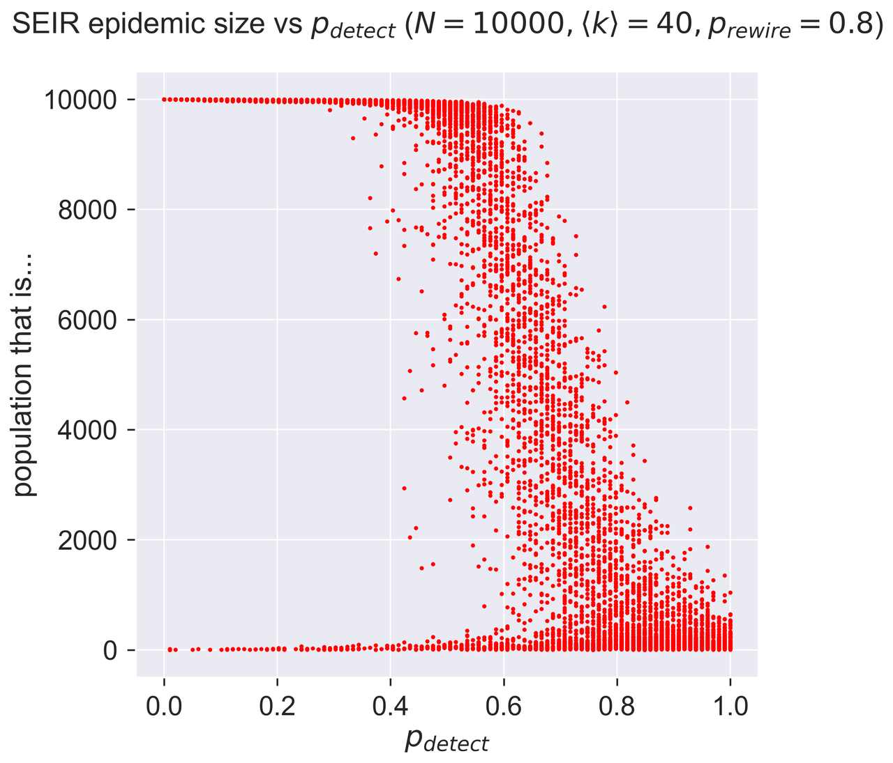

I gave a talk by Zoom to the Institute of Mathematics and its Applications arising from my epidemic modelling book.
UPDATED 2020-12-29: You can now find a video of the talk on the IMA's YouTube channel.
It was a great opportunity to create a general-audience talk from the
work I did during the first lockdown, including some of the maths of
discrete-event simulation that underlie epydemic.
I also spent some time talking about the "waterfall" phase transition
that I found when looking at test-and-trace approaches.

In retrospect I slightly regret including this in the book, as it's the one thing I'm not sure about: I still don't know if this is a "real" phenomenon or an artefact of simulation.
I got some nice questions, mainly focused on the covid-19 pandemic as you'd expect in the current times. Apparently there were about 75 attendees form the UK, China, Germany, France, and Spain: the pandemic has been great for attendance at these virtual events! It's something that I hope persists as the pandemic subsides.